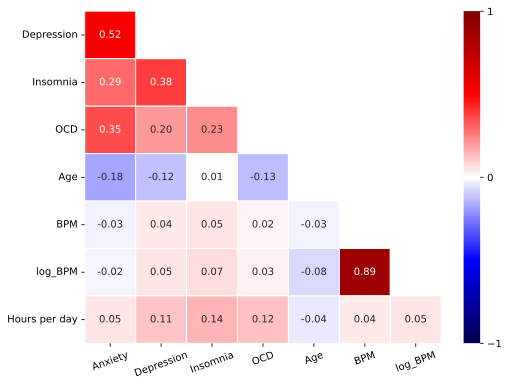

How does music impact mental health?
As studies have been conducted, it has been shown that music not only shapes individual and cultural identities, but also plays a strong role in mood regulation and improvement of mental health. As students, music plays a large role in our lives whether that’s for studying, being active, or hanging out with friends. With the rise of technology, it is especially easier to quantify one’s music statistics, meaning people can report exactly how often they listen to music or exactly what genres they are listening to. Some of our inspiration comes from Spotify Wrapped, a marketing campaign about individual user’s activity over the past year. Seeing how music habits differentiate from person to person motivated us to understand if those habits have any effect on mental health or something greater. We hope to take advantage of the increase in available music streaming data to know in what specific ways listening to music has helped us and what further steps people can take to maximize their potential benefit. To do this, we want to look at how variables such as hours spent listening to music, genres listened to, and context in which the music is listened to can improve disorders such as Anxiety, Depression, and more.
Below are some figures summarizing our data set.
This heatmap demonstrates the correlations of the numerical variables, showing that the mental health illnesses are correlated. There are no clear relationships between the more musical variables and the other numerical variables, specifically "Hours per day" and "BPM", therefore this visualization sets the stage to understand the other graphs in our project.
The boxplot shows a greater distribution and range of people who use pandora, while spotify and apply music have a much smaller range, primarily used by a younger age range.
comment
This graph shows the age distribution of the dataset, showing that our data is skewed. Out of 736 entries, the majority of respondents were between the ages of 15-24. This helps us to understand that we are looking at a younger subset of the world’s population, which could cause bias in our findings.
This histogram reveals that people with high anxiety listen to slightly more music a day than people with medium and low anxiety.
This histogram reveals the relations between the frequency that people listen to various music genres and insomnia.
The visualizations below dive into answering deeper, more specific questions. The first three visualizations are comparing the mental health illnesses to see if there any stark correlations, in order to understand if there is a specific mental health illness that we should hone in on.
Anxiety and depression appear to have a positive linear relationship. OCD and Insomnia do not have clear relationshps with anxiety.
This boxplot demonstrates the ranges of hours listened per day, for each genre. It helps answer the question of how each listener spends their time in the day, which may relate with a mental health illness. For the genres with a higher range of hours listened to per day, Insomnia might be a related mental health illness.
Overall, we can see many small patterns between music and mental health. Some of the factors do not play a significant role, and we cannot see any extreme relationships between any factors, aside from the mental health correlations accross the other illnesses (like anxiety and depression). We can see that jazz and metal music have high ratings of insomnia, however, their hours per day range on the boxplot graph are not extremely skewed. Jazz has a slightly bigger distribution of hours per day listened, however, both Rock and Latin have a greater range of hours listened per day. The relation between genre frequency and insomnia demonstrates that "very frequently" listeners have higher ratings of insomnia. In conclusion, our data does not and will not label a genre or listening habit as "bad for your mental health". However, our visualizations demonstrate small relationships that could have the potential to affect people's mental health ratings.
Back